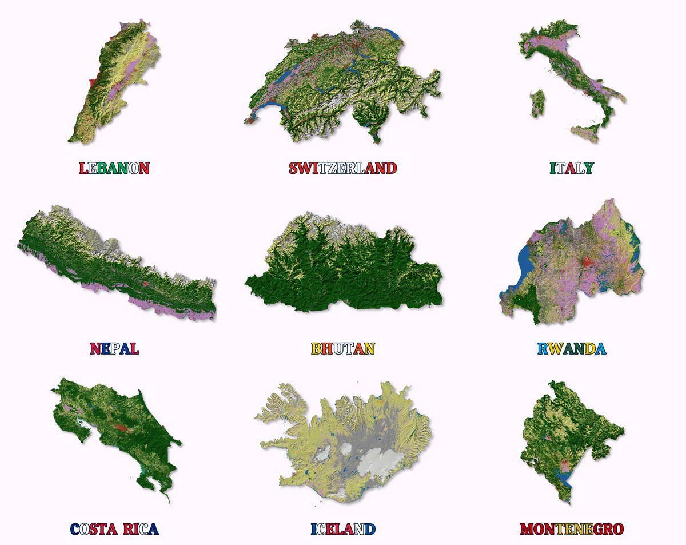

Maps & cartography
Print-ready map series and atlases with one consistent layout, including shaded-relief land-cover maps with a 3D look.
Hi, I'm
GIS & Remote Sensing analyst who turns raw spatial data into clear maps, numbers and dashboards.
Lebanon · open to remote internships and junior roles

I'm a Physical Geography master's student at the Lebanese University. I have been working with ArcGIS for more than two years, self-taught, and I build complete projects: from finding and cleaning open data, through analysis in ArcGIS Pro, Google Earth Engine and Python, to print-ready maps, short reports and web dashboards.
I like questions with a real use: where drought hits hardest, who lives too far from a hospital, how a river basin is shaped. I learn fast and I check my numbers, and in 2024 and 2025 I helped my classmates with the university GIS course.
Print-ready map series and atlases with one consistent layout, including shaded-relief land-cover maps with a 3D look.
Google Earth Engine: land use / land cover classification (supervised and unsupervised), drought indices, water extent, and batch export of global open data (ESA WorldCover, Copernicus DEM).
Hot spot analysis, travel time, hydrology and zonal statistics, with the numbers checked.
Python (arcpy, NumPy, matplotlib) scripts that repeat the work: one template, every map in a single run.

Global open data · shaded relief · automation
ESA WorldCover land cover draped on a shaded Copernicus terrain model for nine countries, from Lebanon to Nepal and Iceland. Google Earth Engine prepares the data; one Python script draws every A4 sheet from the same template, with the share of each land-cover class.
Google Earth Engine · ArcGIS Pro (arcpy) · Python · NumPy · matplotlib

Hydrology · automation · web dashboard
All 16 river basins delineated from a 30 m DEM, with stream network, Strahler order and morphometry. One Python script builds the 16 atlas sheets from a single layout; an interactive dashboard compares the basins.
ArcGIS Pro · arcpy · NumPy · Leaflet · Chart.js

Accessibility · population · decision support
Car travel time to the nearest hospital and primary health centre. 11,100 people live more than 30 minutes from a hospital, 84 % of them in just 8 cadastres; the brief gives options for health partners.
Google Earth Engine · ArcGIS Pro · Python · WorldPop · OpenStreetMap

Remote sensing · time series · spatial statistics
Satellite drought indices (VCI, TCI, VHI) for 2001–2025, drought hot spots per cadastre, and the shrinking Qaraoun reservoir: −61 % surface in autumn 2014 against 2019.
Google Earth Engine · MODIS · CHIRPS · ArcGIS Pro · Python
Looking for a GIS intern or junior analyst, or a mapping task done well? Write to me.